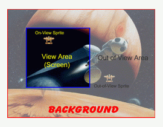
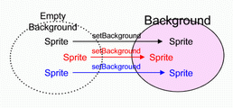

Background Description
As has been explained in previous chapter, every sprites are located somewhere in the screen. Screen in there actually is a background (Background class).

Background Initialization
The basic background initialization is really simple, only need to provide the width and the height of the background :
class :: Background Syntax: public Background(int w, int h); whereas : w = width of the background h = height of the background
Similar to a sprite, background also need to be updated and rendered on each frame :
class :: Background Syntax: public void update(long elapsedTime); public void render(Graphics2D g); whereas : elapsedTime = time elapsed since last updated this value is taken from Game class g = graphics object where the game is rendered
Sprite and Background
Tutorial8_1.java [view online]Associate Sprite with Background
A newly created sprite by default is located in an empty background. To attach the sprite into a background use Sprite.setBackground(Background) function :

class :: Sprite Syntax: public void setBackground(Background backgr); whereas : backgr = background where the sprite will be attach on For example: attach several sprites into a background Background background; Sprite spr1, spr2, spr3; spr1.setBackground(background); spr2.setBackground(background); spr3.setBackground(background);
Make a Sprite on the Center of Background ViewPort
To make a sprite right on the center of background viewport use :
class :: Background Syntax: public void setToCenter(Sprite centered); whereas : centered = sprite that will be in the center of background viewport
Types of Background
Tutorial8_2.java [view online]Available background types in GTGE :
- Color Background
The basic background type, only fill the screen / background with a color. - Image Background
Background is filled with an image. - Tile Background
Tile Background is an arrangement of images in a rectangular grid, like floor tiles. - Parallax Background
Background that make up from several backgrounds (layers) whereas each background is moved smoothly, creating a parallax effect.
Example :
file :: YourGame.java // JFC import java.awt.*; // GTGE import com.golden.gamedev.*; import com.golden.gamedev.object.*; import com.golden.gamedev.object.background.*; public class YourGame extends Game { Background background; Sprite s1, s2, s3; public void initResources() { background = new ColorBackground(Color.BLUE, 800, 600); s1 = new Sprite(getImage("player.png")); s1.setBackground(background); s2 = new Sprite(getImage("player.png")); s2.setBackground(background); s3 = new Sprite(getImage("player.png")); s3.setBackground(background); } public void update(long elapsedTime) { background.update(elapsedTime); s1.update(elapsedTime); s2.update(elapsedTime); s3.update(elapsedTime); } public void render(Graphics2D g) { background.render(g); s1.render(g); s2.render(g); s3.render(g); } public static void main(String[] args) { GameLoader game = new GameLoader(); game.setup(new YourGame(), new Dimension(640,480), false); game.start(); } }
Changing Background ViewPort
Tutorial8_3.java [view online]By default background viewport is as big as game size (occupy all the game area). For example if the game size is 640x480 then the viewport of the background will also as big as 640x480. This viewport could be changed using :
class :: Background Syntax: public void setClip(int x, int y, int width, int height); whereas : x = start x coordinate to render the background y = start y coordinate to render the background width = width of background viewport height = height of background viewport
Important Notice
The direct usage of sprite and background like above is the first approach of sprite management in GTGE.
The important thing on this first approach is don't forget to attach / associate each sprite with the desired background.
Next we will explain the next approach of sprite management in GTGE, sprites are grouped into groups.